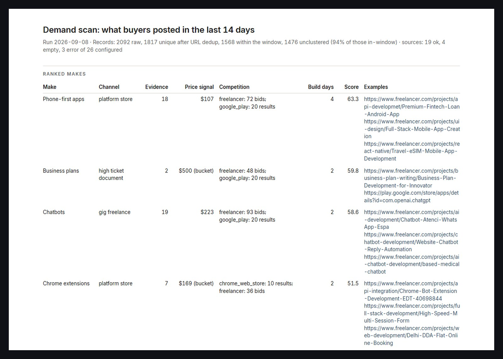

Web scraping and reporting · Python · in weekly use
A scraper that reads twenty-six sources and hands me one ranked table every Monday at seven.
It reads job feeds, app stores, asset marketplaces and forum threads, keeps every record with its source, deduplicates by URL, clusters by content, and scores each cluster on how much was posted, what it paid and how crowded it is. The output is one page. There is a ranked table with example links, a source-health table that says which sources answered and which did not, and the phrases that fitted no cluster. It runs on a schedule and reports its own failures instead of hiding them.

How it is built
- Each source is one module with one job, which is to fetch and normalise. Supply-side posts, from people offering work instead of hiring, are filtered by rule per source, and the counts of what was excluded go into the health file.
- Every raw record is kept with its cluster id in a line-delimited file per run. Deduplication happens after clustering, so the audit trail is complete and the scores are computed on unique listings.
- Scoring is a weighted sum of demand, price and competition. The weights live in a config file and must sum to one, and a divide-by-zero guard makes a source with a single record score flat instead of crashing.
- The report is derived from the health file re-read from disk, never from the in-memory run, so what is reported cannot differ from what was saved.
- A self-test rebuilds the ranked table from a saved raw file through the real scoring code and compares it to the report, to the decimal. Three independent reviewers ran it before the schedule was registered.
- A scheduled task runs it every Monday at 07:00 and pushes the top five rows to my phone when it finishes.
This tool runs locally and is not public. The report above is a real run from 8 September 2026 with its own styling. A scraper for a buyer's sources ships with the same audit trail, health table and self-test.